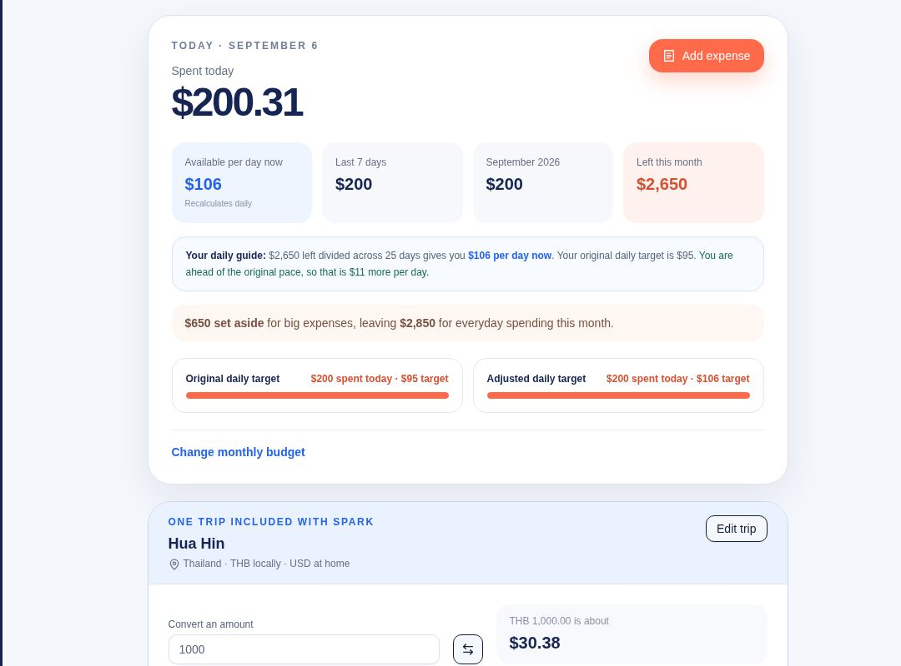
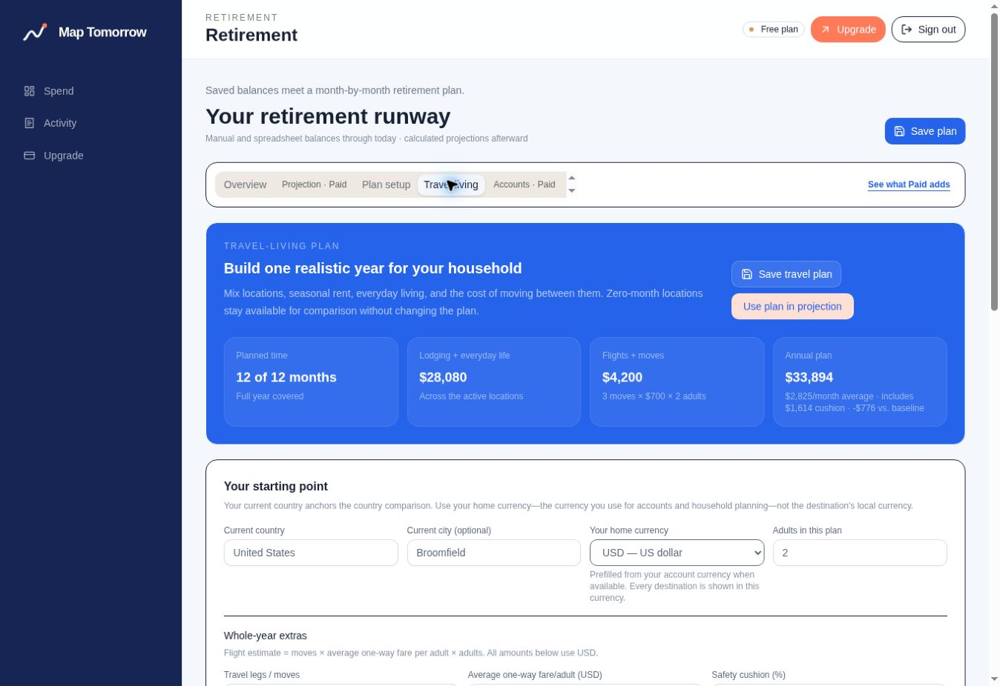
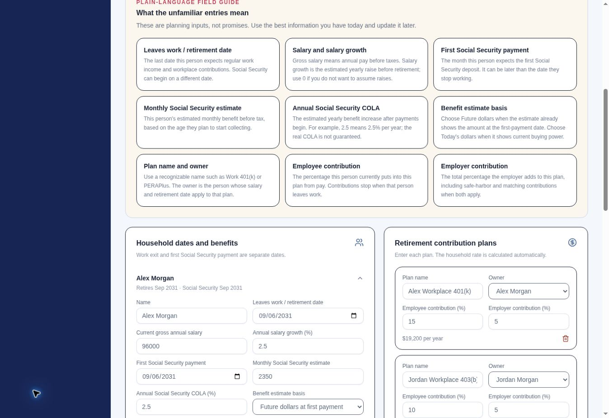

Life-planning platform
Map Tomorrow
A personal planning application that connects what a household spends today with the retirement, travel, and lifestyle choices it wants to make tomorrow.
- Role
- Founder, product designer, and full-stack developer
- Platform
- React, Next.js, TypeScript, Cloudflare, Drizzle, Plaid, and Stripe
- Portfolio data
- Fictional household, spending, benefits, balances, and travel assumptions

The challenge
Make daily money decisions support a future life plan.
Spending trackers usually explain the past, while retirement calculators ask for a separate set of assumptions about the future. That separation makes it difficult to see how today's budget, large upcoming expenses, retirement timing, and travel goals affect one another.
Map Tomorrow was designed to keep those decisions connected while preserving clear ownership of every assumption. The application does not invent income, benefits, balances, or spending targets for the user.
The solution
One workspace from daily spending to long-range runway.
The experience combines a practical daily spending guide with category budgets, occasional expenses, household retirement planning, and a location-based Travel Living planner.
- Daily spending pace recalculated from the money remaining in the month
- Category limits separated from planned flights, insurance, and other large expenses
- Manual, CSV, and optional read-only account workflows
- Separate work-exit and Social Security dates for each household member
- Contribution plans assigned to each person with employee and employer percentages
- Expected, conservative, and favorable retirement return scenarios
- Travel-year modeling with rent, everyday costs, transitions, currency context, and a safety cushion
My contribution
Product strategy, modeling, integrations, and safeguards.
I defined the product workflow, financial-planning logic, user experience, data model, and staged commercial architecture. The application uses a modern React and TypeScript interface, server-side validation, household-level data isolation, and explicit assumptions that remain visible to the user.
Financial connections are optional and read-only. Imported files are reviewed before their snapshot values are submitted, access tokens are encrypted before storage, and the application does not implement transfers or payments.
Product walkthrough
Four connected planning views
These screens come from the current staging application using a fictional household and demonstration data. No personal financial account is connected.



Portfolio note